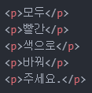

> MEMO: 오늘부터는 CSS라는 새로운 마크업 언어를 리뷰합니다. 이 CSS는 HTML과 호환성이 아주 좋은 언어로, 웹 페이지를 좀 더 세련되고 멋지게 꾸밀 수 있도록 해줍니다.
- 주석 달기
- CSS의 본질에 대해 알아보기
오늘의 첫 번째 목표는 '주석 달기'입니다.
우리는 무엇을 해야 하는지 까먹지 않기 위해 이들을 어딘가에 써놓고 작업을 하곤 합니다.
그리고 자기자신이 알아보기 쉽도록 자기만의 스타일로 써놓곤 하죠.
그런데 그 내용이 웹 페이지에도 출력이 된다면 아주 곤란해지죠.
그래서 편집기에서만 보이고 웹 페이지에는 출력이 안 되는, 그런 기능을 이용해보려고 합니다.
바로 '주석' 기능인데요, 코드는 아주 간단합니다.
아래와 같이 코드를 작성하시면 됩니다.
주석을 나타내는 코드 색상은 다른 코드와는 다르게 어두운 색으로 변하게 됩니다.
그리고 마우스 우클릭 후 '페이지 소스 보기'를 통해 알 수 있듯이, 웹 페이지에는 해당 코드가 입력되어 있지만 출력은 되지 않는 것을 알 수 있습니다.
아주 간단하죠?
오늘부터는 CSS에 대해 알아보려고 합니다.
본격적인 시작에 앞서, 오늘은 CSS의 중요한 본질을 알아보려고 합니다.
이전에 텍스트 색상을 변경하고 싶으면 'style="color:blue"'와 같이 'style' 속성을 이용하면 된다고 했었습니다.
그런데, 이 방법에는 명확한 단점이 존재합니다.
1,000개의 태그 내에 쓰인 텍스트들의 색상을 변경해야 할 때 일일이 전부 변경해줘야 한다는 것입니다.
하나에 5초가 걸린다고 하면 최소 5,000초..그러니까 83.33분 정도가 소요됩니다.
엄청난 끈기가 있어야 된다는 뜻이죠.
그런데 이를 단 5초 만에 해결할 수 있다는 것입니다.
CSS를 이용한다면 말이죠.

그럼 아래와 같이 화면에 출력됩니다.모두
빨간
색으로
바꿔
주세요.
이 텍스트들을 모두 빨간색으로 바꾸기 위해 'style="color:red"' 속성을 일일이 적용해줘야 할까요?
5번이면 금방이겠지 싶지만, 저런 코드가 1,000개는 더 있다고 생각하면 아주 귀찮아질겁니다.
그런데 이들을 한번에 빨간색으로 바꿀 수 있습니다.
바로 CSS의 'style' 태그를 이용하는 것입니다.
'head' 태그 내부에 다음과 같은 코드를 작성해줍니다.
'p' 태그 내부에 쓰인 텍스트를 모두 빨간색으로 바꿔준다는 뜻입니다.
CSS 코드 양식을 잘 기억하세요.
뒤에 세미콜론(;)이 붙는다는 것도 잊으시면 안됩니다.
지금 이 페이지에는 'p' 태그가 많이 사용되었기 때문에 새로운 페이지를 삽입하여 확인해보겠습니다.저런 간단한 코드 하나로 자칫하면 귀찮아지는 작업을 한번에 해결했습니다.
이것이 CSS의 첫 번째 본질인 '효율성'입니다.
전체 코드는 아래와 같습니다.

두 번째 본질은 '독립성'입니다.
CSS는 HTML이 정보 그 자체로써의 역할을 할 수 있도록 디자인 기능을 독립시킨 언어입니다.
'h1' 태그로 예를 들어보겠습니다.
'h1' 태그는 해당 페이지의 전체적인 내용을 대변하는 제목 역할을 합니다.
그런데 해당 태그에 'style'과 같은 속성이 적용되어있다고 합시다.
만약 해당 페이지를 검색한다면, 이때 'style' 속성이 검색 엔진의 탐색을 방해할 수 있습니다.
검색 엔진은 'h1' 태그만 있으면 쉽게 탐색을 할 수 있는데, 'style' 속성과 같은 불필요한 정보까지 탐색하게 된다는 것이죠.
그렇게 해당 페이지가 검색되지 않을 수도 있습니다.
그래서 위 예시처럼 다른 속성들은 사용하지 않고, 'p' 태그만 사용하고 CSS 코드를 따로 작성하여 HTML이 정보로써의 역할만 충실히 하도록 만드는 것입니다.